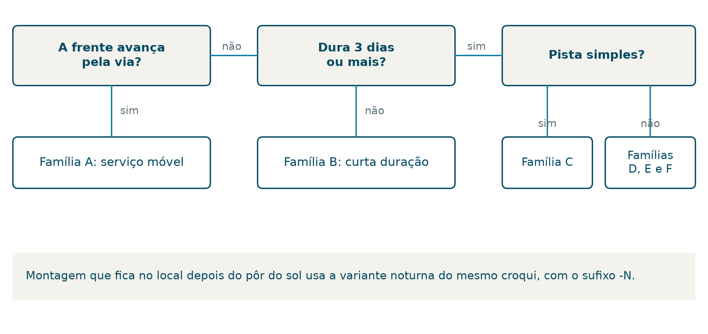
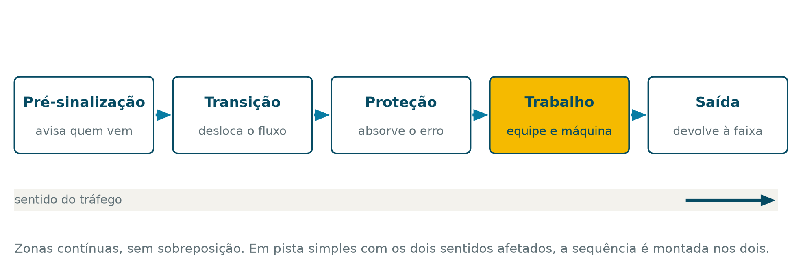
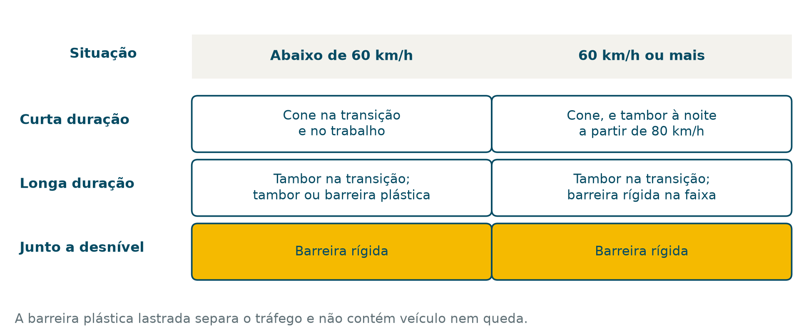
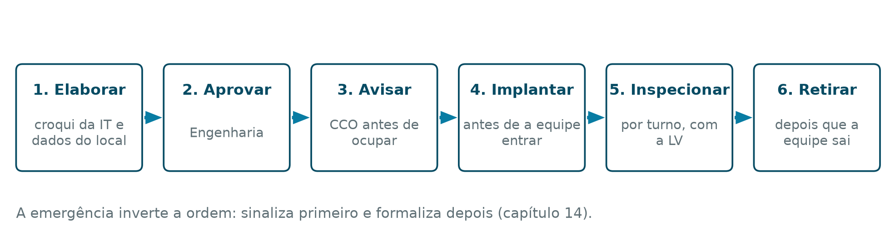

Concessionária 116 Sertões · Rota dos Sertões
Manual de Sinalização Provisória de Obras e Serviços
- Código
- MAN-SIN-116
- Revisão
- R02
- Data
- 13/11/2026
- Status
- PR (em análise crítica)
01 / Objetivo e aplicação
1.1 Objetivo
O manual fixa os critérios de planejamento, implantação, manutenção, inspeção e retirada da sinalização provisória no sistema rodoviário da Concessionária 116 Sertões S.A. (Concessão Rota dos Sertões, Contrato ANTT nº 1/2026).
1.2 Quem segue este manual
Vale para todo o sistema concedido, nas BR-116/BA, BR-116/PE e BR-324/BA, sempre que a atividade interfere na circulação de veículos, pedestres ou ciclistas. Isso inclui pista, acostamento, canteiro, OAE, passarela, interseção, acesso e faixa de domínio.
Seguem o manual:
- equipes próprias da Concessionária;
- empresas contratadas e subcontratadas;
- terceiros autorizados a executar obra ou serviço na faixa de domínio;
- equipes de Operações no atendimento a emergências.
1.3 Os quatro volumes
| Volume | O que traz |
|---|---|
| I. MAN-SIN-116, este manual | Regras, parâmetros, responsabilidades e registros |
| II. IT-SIN-116, croquis | 49 croquis de situação-tipo, CR-A01 a CR-F07, com 15 variantes noturnas (sufixo -N) |
| III. LV-SIN-116, listas | Conferência em campo antes de implantar, por turno, à noite e na retirada |
| IV. AN-SIN-116, anexos | Parâmetros completos por velocidade, constantes, índice de croquis, dispositivos por família e glossário |
O plano de sinalização aplica um croqui ao local, com o km PER, a geometria, a velocidade e o horário reais. O formulário é o FR-SIN-116. Emergência e incidente saíram para o conjunto operacional, de uso interno (capítulo 14).
1.4 Precedência
O CTB e o Regulamento de Sinalização Viária do CONTRAN (Resolução nº 973/2022 e alterações) prevalecem sobre este manual. O manual lê o MBST por essa resolução: o Vol. VII define áreas, placas e operação; o Vol. VI define forma, cor, dimensão e uso dos dispositivos.
Onde MBST e IPR 738 divergem, vale o valor mais exigente. Onde nenhum dos dois fixa número, o manual adota critério da Concessionária e diz isso no próprio item.
1.5 Faixa de velocidade coberta
As tabelas do capítulo 6 cobrem de 40 a 110 km/h, em múltiplos de 10. Velocidade fora dessa faixa exige projeto específico aprovado pela Engenharia. Velocidade intermediária usa a linha tabelada imediatamente superior (critério da Concessionária).
Fixado o alcance, o capítulo seguinte reúne as normas de onde vêm os parâmetros.
02 / Documentos de referência
| Documento | O que rege |
|---|---|
| Lei nº 9.503/1997, Código de Trânsito Brasileiro, arts. 1º § 3º, 61, 68, 80, 88, 90, 94, 95 e 246 | Obrigação de sinalizar, permissão prévia, aviso à comunidade, proteção de pedestres |
| Resolução CONTRAN nº 973/2022 e alterações, Regulamento de Sinalização Viária (MBST, edição 2022) | Base de todos os volumes do MBST citados neste manual |
| CONTRAN, Manual Brasileiro de Sinalização de Trânsito, Volume VII, Sinalização Temporária (Anexo VII da Res. 973/2022) | Esquema básico das áreas, placas, dispositivos, operação pare e siga, EPI, semáforo portátil |
| CONTRAN, Manual Brasileiro de Sinalização de Trânsito, Volume VI, Dispositivos Auxiliares (Anexo VI da Res. 973/2022) | Forma, cor, dimensões e colocação dos dispositivos de uso temporário (cap. 10) e de contenção (cap. 6) |
| CONTRAN, Manual Brasileiro de Sinalização de Trânsito, Volumes I, II, IV e V | Regulamentação, advertência, sinalização horizontal e semafórica, quando o Volume VII remete a eles |
| DNIT, Publicação IPR 738, Manual de Sinalização de Obras e Emergências em Rodovias, 2ª edição (2010) | Áreas junto a obras, emergências, aberturas no canteiro, implantação, manutenção, desativação |
| NR-01, Disposições Gerais e Gerenciamento de Riscos Ocupacionais | Inventário de riscos e plano de ação da atividade na pista |
| NR-06, Equipamento de Proteção Individual (EPI) | Vestimenta de alta visibilidade e demais EPI do trabalhador na pista |
| NR-07, Programa de Controle Médico de Saúde Ocupacional (PCMSO) | ASO do homem bandeira e do operador de sinalização de parada, contemplando a atividade em via aberta ao tráfego |
| NR-18, Segurança e Saúde no Trabalho na Indústria da Construção | Frentes de obra, sinalização e isolamento da área de trabalho |
| NR-35, Trabalho em Altura | Serviços em OAE, passarelas e plataformas suspensas |
| ABNT NBR 15292, Artigos confeccionados: vestimenta de segurança de alta visibilidade | Classes, cores e áreas mínimas de material fluorescente e retrorrefletivo da vestimenta |
| Programa de Exploração da Rodovia (PER), Volume II, ajustado pós-leilão | Obrigações de operação e de informação ao usuário |
| Contrato de Concessão ANTT nº 1/2026 | Comunicação à ANTT e obrigações da Concessionária |
| IT-SIN-116, Croquis de Sinalização Provisória de Obras e Serviços (Volume II) | Croquis por situação-tipo |
| LV-SIN-116, Listas de Verificação de Sinalização Provisória (Volume III) | Conferência em campo e registro das inspeções |
Quando uma referência for revista, vale a edição vigente. A Engenharia atualiza este manual quando a mudança alterar parâmetro ou regra.
Com as fontes à vista, o capítulo seguinte fixa os termos que a Concessionária usa de modo próprio.
03 / Definições e siglas
| Termo | Definição |
|---|---|
| AMC | Atenuador de impacto montado em caminhão ou reboque. |
| APR | Análise Preliminar de Riscos da frente, elaborada pela executora antes do início do serviço. |
| CCO | Centro de Controle Operacional da Concessionária. |
| Croqui | Desenho-tipo da IT-SIN-116 para uma situação de obra ou serviço. |
| Faixa 1, faixa 2 | Numeração das faixas de um sentido a partir do eixo ou do canteiro central. A faixa 1 é a da esquerda. |
| Frente de serviço | Conjunto de equipe, equipamentos e sinalização num mesmo local. |
| km PER | Quilometragem do PER Vol. II ajustado pós-leilão, referência única de localização. |
| Permissão de trabalho | Documento com que a executora libera a frente, identifica a equipe e registra as condições da tarefa do dia. |
| Plano de sinalização | Documento que aplica um croqui ao local, ao horário e à duração da obra ou serviço. |
| Responsável pela frente | Pessoa designada pela executora para responder pela frente e pela sinalização no local, em contato com o CCO. |
| Sinalizador | Trabalhador capacitado que controla ou alerta o tráfego na frente. Reúne o homem bandeira (item 9.3) e o operador de sinalização de parada (item 9.4), e é o termo usado quando a regra vale para os dois. O MBST Vol. VII, capítulo 11, chama os dois de sinaleiro. |
| Viatura de inspeção | Veículo de inspeção de tráfego das equipes de Operações. |
| Zona de trabalho | O mesmo que área de trabalho. A extensão máxima do item 10.4 vale para ela, sem contar transição e proteção. |
As cinco zonas da montagem estão definidas no capítulo 6, e cada dispositivo, no capítulo 7.
Siglas: ANTT (Agência Nacional de Transportes Terrestres), ASO (Atestado de Saúde Ocupacional), CTB (Código de Trânsito Brasileiro), DNIT (Departamento Nacional de Infraestrutura de Transportes), EPI (equipamento de proteção individual), MBST (Manual Brasileiro de Sinalização de Trânsito), NC (não conformidade), NR (Norma Regulamentadora), OAE (obra de arte especial: ponte, viaduto, passarela, túnel), PCMSO (Programa de Controle Médico de Saúde Ocupacional), PER (Programa de Exploração da Rodovia), PMV (painel de mensagem variável), PRF (Polícia Rodoviária Federal), QSSMA (Qualidade, Saúde, Segurança e Meio Ambiente, a cargo da Gerência de Sustentabilidade e Qualidade), SAU (Serviço de Atendimento ao Usuário), TH (trecho homogêneo), VMD (volume médio diário de veículos nos dois sentidos).
Com os termos fixados, o capítulo seguinte traz as dez regras que valem em qualquer frente.
04 / Regras para sinalização provisória de frentes de obras e serviços
- Nenhuma ocupação de pista, acostamento ou canteiro começa sem plano de sinalização aprovado e sem autorização do CCO. A exceção é a emergência, tratada no capítulo 14.
- A sinalização é implantada antes de a equipe entrar na área de trabalho e retirada depois que a equipe e os equipamentos saem.
- A montagem segue o croqui da IT-SIN-116 indicado no plano. Distâncias e espaçamentos não ficam abaixo dos valores do capítulo 6.
- A sinalização diurna não vale à noite. Montagem que permanece no local após o pôr do sol usa a variante noturna do croqui.
- Todo trabalhador executando serviço na rodovia usa vestimenta de alta visibilidade e trabalha de frente para o tráfego sempre que a tarefa permitir.
- Ninguém permanece na área de proteção. Material, equipamento e veículo ficam dentro da área de trabalho.
- O pare e siga só opera em pista simples (critério da Concessionária), com rádio entre os operadores de sinalização de parada em qualquer extensão.
- A placa danificada, suja ou sem retrorrefletividade é substituída no mesmo turno.
- Sinalização sem obra é retirada. Sinalização permanente que contradiz a provisória é coberta enquanto durar a obra.
- O responsável pela frente suspende o serviço quando a chuva, a neblina ou a fumaça tirarem a visibilidade da sinalização, e comunica o CCO.
05 / Classificação dos serviços
5.1 Critérios
A classificação considera a duração, a mobilidade e a previsibilidade da intervenção (MBST Vol. VII, capítulo 3).
| Classe | Característica | Croquis da IT-SIN-116 | Exemplos |
|---|---|---|---|
| Serviço móvel | Equipe e equipamentos avançam continuamente ao longo da via, com paradas curtas | Família A (CR-A01 a CR-A08) e CR-B05, em comboio | Varrição, roçada mecanizada, coleta de resíduos, pintura de faixa, tapa-buraco, inspeção de drenagem |
| Curta duração | Ocupação fixa prevista para menos de 3 dias. Os croquis da família B são montados e retirados na mesma jornada diurna | Família B (CR-B01 a CR-B04) e, em pista simples, CR-C01, CR-C02 e CR-C06 a CR-C08 | Reparo de defensa, troca de placa, tapa-buraco, ensaio de pavimento |
| Longa duração | Ocupação fixa prevista para 3 dias ou mais | Famílias C, D, E e F, com variante -N | Recuperação de OAE, bueiro, alargamento, duplicação, contenção |
| Emergência | Ocorrência imprevista que exige resposta imediata | MAN-OPE-116 e IT-OPE-116, de uso interno | Acidente, erosão, queda de barreira, alagamento, carga na pista |
5.2 Mudança de classe
A frente de curta duração que não terminar na jornada só permanece à noite com a variante noturna do croqui ou com plano noturno da Engenharia (regra 4), e com a comunicação ao CCO. Quando a previsão passar a 3 dias ou mais, a frente segue as regras de longa duração: placas em poste ou cavalete lastrado, tambores na transição e barreira rígida nos casos do item 6.5.
O serviço móvel que parar no mesmo ponto por mais tempo que o previsto no plano passa para a família B. A emergência que exigir obra de mais de uma jornada passa a ter plano de sinalização emergencial (capítulo 14).
5.3 Croquis disponíveis
A IT-SIN-116 tem 49 croquis: 34 situações e 15 variantes noturnas. Os croquis de emergência e incidente (família G) saíram para a IT-OPE-116, de uso interno, com os códigos preservados.


| Família | Códigos | Situações | Variantes noturnas |
|---|---|---|---|
| A Serviços móveis | CR-A01 a CR-A08 | 8 | não há |
| B Curta duração fixa | CR-B01 a CR-B05 | 5 | não há |
| C Pista simples, ocupação de faixa | CR-C01 a CR-C08 | 8 | 3 |
| D Pista dupla, longa duração | CR-D01 a CR-D05 | 5 | 5 |
| E Trecho urbano | CR-E01 | 1 | 1 |
| F OAE e passarelas | CR-F01 a CR-F07 | 7 | 6 |
O índice croqui a croqui, com título e tipo de cada prancha, está no AN-SIN-116.
06 / Zonas da área de trabalho
6.1 Sequência das zonas


As zonas são contínuas e não se sobrepõem. Em pista simples com os dois sentidos afetados, a sequência é montada nos dois sentidos.
6.2 Pré-sinalização
A pré-sinalização deve:
- começar pela placa A-24 (obras). A placa R-19 (velocidade máxima permitida) nunca é a primeira vista pelo condutor; vem depois da A-24 ou conjugada a ela (MBST Vol. VII, item 5.4);
- ter as placas nas posições do caso da obra, medidas a partir do início da transição (ver abaixo);
- manter entre placas a distância mínima de 100 m em via rural e 50 m em via urbana (MBST Vol. VII, item 6.7);
- repetir a R-19 após cada acesso que entre no trecho em obra e a cada 500 m quando a interferência passar de 1 km (MBST Vol. VII, item 6.8);
- trazer, sob a A-24, a placa da série A-21, a A-15 e a placa DESVIO, a informação complementar com a distância até o ponto sinalizado ("A xxx m"). No pare e siga, a A-15 (parada obrigatória à frente) avisa o ponto de parada nos dois sentidos.
A extensão da pré-sinalização depende do que a obra faz com o fluxo (IPR 738, item 3.1.1; MBST Vol. VII, item 5.2.1):
- fluxo parado ou desviado (faixa suprimida, pare e siga, desvio, bloqueio): posições da tabela do item 6.7;
- obra no acostamento, sem desvio do fluxo: 500 m;
- obra que só estreita a faixa, sem desvio do fluxo: 1.000 m. Em pista dupla com três faixas ou mais por sentido, a 90 km/h ou mais, vale a tabela do item 6.7 (MBST Vol. VII, item 5.2.1).
Esses valores não recebem acréscimo automático em curva, crista ou visibilidade curta. O plano de sinalização pode ampliar a pré-sinalização com justificativa de projeto, como fila prevista ou visibilidade reduzida antes da transição.
O Projeto-Tipo 9 do MBST Vol. VII mostra placas repetidas no canteiro central em pista dupla. Este manual não as exige; o projetista pode incluí-las no plano.
A redução de velocidade é obrigatória quando houver supressão ou estreitamento de faixa que exija redução de 20 km/h ou mais em relação à velocidade regulamentada, ou trabalhador na pista (MBST Vol. VII, item 5.4). A redução é feita em degraus: cada R-19 reduz no máximo 20 km/h em relação à velocidade anterior, até a velocidade da obra, que não fica abaixo de 40 km/h (MBST Vol. VII, item 5.4; MBST Vol. I). Quando o plano não fixar outro valor, a velocidade da obra é de 40 km/h no pare e siga, no semáforo portátil e com pedestres; com faixa suprimida ou desvio, é a velocidade regulamentada menos 40 km/h; nos demais casos, menos 20 km/h.
Em serviço móvel, a pré-sinalização tem no mínimo 200 m (IPR 738, item 3.1.5). Na faixa, ela é feita pelo veículo de advertência do comboio, na distância do item 8.2; no acostamento, pelas placas fixas de 500 m. Nas demais situações valem as posições do croqui adotado.
6.3 Transição
A transição para supressão de uma faixa tem o comprimento da tabela do item 6.7. Valem também:
- transição de acostamento, sem ocupação da faixa: 50 m;
- transição de meia pista com pare e siga: 50 m (IPR 738, item 3.1.2). O MBST Vol. VII, item 5.2.2, prevê acréscimo de até 50 m à transição no pare e siga; a Concessionária adota o valor do IPR 738 como comprimento da transição no ponto de parada, compatível com o Projeto-Tipo rural 4 do MBST;
- duas transições seguidas (supressão de duas faixas) têm entre si um trecho de acomodação com o comprimento de uma transição;
- transição de emergência feita com os cones da viatura: no máximo 50 m e no máximo 10 cones, que são os da viatura (item 8.1) (MBST Vol. VII, item 5.2.2, admite transição reduzida em emergência).
A transição não começa logo depois de curva, de lombada ou de crista que esconda a canalização, nem dentro de túnel (IPR 738, item 3.2.2). Nesses casos, a transição é antecipada para trecho com visibilidade. Em OAE, a transição termina antes da cabeceira (item 13.1).
6.4 Proteção
A área de proteção longitudinal, anterior à área de trabalho, tem o comprimento da tabela do item 6.7. O veículo de proteção com AMC, quando usado, fica dentro dessa área (MBST Vol. VII, item 10.3). No fechamento de faixa de curta duração em pista dupla, um veículo de sinalização ocupa a faixa fechada, nas distâncias do item 8.2 (CR-B02, CR-B03 e CR-F07).
A proteção lateral entre a linha de canalização e a área de trabalho é de 0,60 m (IPR 738, item 5.7) e sai da área de trabalho: a canalização fica no limite da área ocupada, sem invadir a faixa aberta. A faixa remanescente ao lado da obra tem no mínimo 3,00 m de largura.
Esse mínimo é critério da Concessionária: o CONTRAN admite veículo de até 2,60 m de largura, e a faixa precisa deixar folga lateral para o caminhão passar junto à canalização sem tocá-la. Quando a faixa remanescente ficar abaixo do mínimo, o plano suprime a faixa (pare e siga em pista simples, CR-C02; fechamento de faixa em pista dupla) ou reduz a área de trabalho.
6.5 Área de trabalho
Toda área de trabalho tem separação física em relação ao fluxo de veículos e de pedestres (MBST Vol. VII, item 5.5). O dispositivo depende da duração, da velocidade e da posição da obra:
- curta duração: cones na transição e na área de trabalho;
- longa duração: tambores na transição e, na área de trabalho, tambores ou barreira plástica lastrada, salvo nos casos de barreira rígida abaixo;
- barreira rígida: nas hipóteses do item 7.3, que valem também para o pare e siga e o semáforo portátil de longa duração, porque a faixa aberta passa ao lado da obra;
- à noite, tambor ou cilindro canalizador na transição e no bloqueio, a partir da velocidade do tambor noturno do item 7.3; o cone fica restrito à área de trabalho e às velocidades menores. A primeira resposta de emergência usa os cones da viatura.
A barreira plástica lastrada faz a separação do tráfego e não contém veículo nem queda: ela não substitui a barreira rígida (item 7.3).
Este manual não exige terminal na barreira rígida (atenuador ou terminal ancorado). O projeto pode prevê-lo. O afastamento mínimo de barreira, tapume e tela em relação à faixa aberta (MBST Vol. VI, itens 6.1.2, 10.6, 10.7 e 10.8) e as alturas de tapume e gradil (Vol. VI, itens 10.7 e 10.10) ficam como recomendação neste manual.
O espaçamento dos cones e dos demais dispositivos de canalização segue a tabela do item 6.7. A entrada e a saída de veículos da obra ficam em pontos definidos no plano, com visibilidade e sem cruzar o fluxo (IPR 738, item 3.2.3).
6.6 Saída
Depois da área de trabalho ficam:
- a proteção posterior: 30 m em rodovia e 15 m em acostamento ou via urbana;
- a transição posterior de retorno à faixa: 30 m para faixa e 15 m para acostamento;
- a placa FIM DAS OBRAS a 30 m após o fim da transição posterior (MBST Vol. VII, item 5.2.7);
- quando houve redução de velocidade, o R-19 com a velocidade regulamentada do trecho a 100 m depois da placa FIM DAS OBRAS, em cada sentido sinalizado (MBST Vol. VII, item 5.4).
Na rota alternativa (CR-C05, CR-F04) não há FIM DAS OBRAS no sentido bloqueado, porque nenhum veículo passa por ele. No serviço móvel em comboio na faixa não há saída sinalizada: os veículos acompanham a frente (item 8.2).
6.7 Parâmetros por velocidade
Para usar a tabela:
- identificar a velocidade regulamentada do trecho no km PER da obra;
- identificar o tipo de via: pista simples, pista dupla ou trecho urbano. Trecho rural com características urbanas (calçada, guia, comércio, pedestres) é tratado como urbano (MBST Vol. VII, item 5.3.1);
- ler a linha correspondente.
| Via | V (km/h) | Placas antes da transição (m) | Transição (m) | Proteção longitudinal (m) | Espaçamento de cones (m) |
|---|---|---|---|---|---|
| Pista simples | 40 | 1.500, 1.000, 500, 400, 300, 200, 100 | 100 | 60 | 3 |
| Pista simples | 50 | 1.500, 1.000, 500, 400, 300, 200, 100 | 100 | 60 | 8 |
| Pista simples | 60 | 1.500, 1.000, 500, 400, 300, 200, 100 | 150 | 60 | 8 |
| Pista simples | 70 | 1.500, 1.000, 500, 400, 300, 200, 100 | 150 | 60 | 10 |
| Pista simples | 80 | 1.500, 1.000, 500, 400, 300, 200, 100 | 150 | 60 | 10 |
| Pista simples | 90 | 1.500, 1.000, 500, 400, 300, 200, 100 | 200 | 100 | 10 |
| Pista simples | 100 | 1.500, 1.000, 500, 400, 300, 200, 100 | 200 | 100 | 10 |
| Pista simples | 110 | 1.500, 1.000, 500, 400, 300, 200, 100 | 200 | 100 | 15 |
| Pista dupla | 40 | 1.500, 1.000, 500, 400, 300, 200, 100 | 100 | 60 | 3 |
| Pista dupla | 50 | 1.500, 1.000, 500, 400, 300, 200, 100 | 100 | 60 | 8 |
| Pista dupla | 60 | 1.500, 1.000, 500, 400, 300, 200, 100 | 150 | 60 | 8 |
| Pista dupla | 70 | 1.500, 1.000, 500, 400, 300, 200, 100 | 150 | 60 | 10 |
| Pista dupla | 80 | 1.500, 1.000, 500, 400, 300, 200, 100 | 150 | 60 | 10 |
| Pista dupla | 90 | 2.000, 1.500, 1.000, 500, 400, 300, 200, 100 | 200 | 100 | 10 |
| Pista dupla | 100 | 2.000, 1.500, 1.000, 500, 400, 300, 200, 100 | 200 | 100 | 10 |
| Pista dupla | 110 | 2.000, 1.500, 1.000, 500, 400, 300, 200, 100 | 200 | 100 | 15 |
| Via urbana | 40 | 100, 50 | 40 | 30 | 3 |
| Via urbana | 50 | 150, 100, 50 | 50 | 30 | 8 |
| Via urbana | 60 | 150, 100, 50 | 60 | 30 | 8 |
| Via urbana | 70 | 1.000, 500, 400, 300, 200, 100, 50 | 70 | 30 | 10 |
| Via urbana | 80 | 1.000, 500, 400, 300, 200, 100, 50 | 150 | 60 | 10 |
| Via urbana | 90 | 1.000, 500, 400, 300, 200, 100, 50 | 170 | 60 | 10 |
| Via urbana | 100 | 1.000, 500, 400, 300, 200, 100, 50 | 180 | 60 | 10 |
| Via urbana | 110 | 1.000, 500, 400, 300, 200, 100, 50 | 200 | 60 | 15 |
Os valores são o mais exigente entre o MBST Vol. VII e o IPR 738. Onde as normas-base não fixam número, ou fixam valor menos restritivo, o parâmetro é critério da Concessionária: proteção longitudinal acima de 80 km/h, extensão máxima do pare e siga, tempo máximo de espera, extensão máxima de interdição, distância mínima entre frentes, faixa remanescente mínima, distância do R-19 de retorno e distâncias dos veículos do comboio.
Definidas as zonas, o capítulo seguinte trata do que preenche cada uma delas.
07 / Dispositivos
7.1 Requisitos gerais
Os dispositivos devem:
- seguir forma, cor, dimensão e material do MBST Vol. VI, capítulo 10, e do MBST Vol. VII, capítulo 8;
- ser retrorrefletivos e, à noite, complementados por elementos luminosos (IPR 738, item 3.2.5);
- estar limpos, inteiros e sem deformação. Dispositivo danificado é retirado de uso;
- ter reserva no canteiro ou no veículo de apoio para reposição imediata (IPR 738, item 3.3.2).
A sinalização permanente que conflitar com a provisória é coberta ou removida até a desativação da obra (IPR 738, item 3.3.1).
Os dispositivos mínimos de cada montagem estão no bloco "Dispositivos mínimos" do croqui correspondente, na IT-SIN-116, e resumidos por família no AN-SIN-116. O plano de sinalização pode acrescentar dispositivos e nunca retira os mínimos.
A especificação mínima do cone, do cilindro canalizador, da película retrorrefletiva e da seta está no AN-SIN-116, com a fonte de cada requisito. Dispositivo abaixo dela não entra na frente.
7.2 Placas
A placa é instalada girada de 3 a 5 graus para a esquerda da normal ao eixo da via, de modo que o farol não retorne ao condutor (MBST Vol. VII, item 6.3). Os croquis da IT-SIN-116 desenham esse giro.
| Grupo | Placas | Uso |
|---|---|---|
| Advertência de obras | A-24 (obras), com informação complementar quando necessário | Primeira placa da pré-sinalização |
| Advertência de estreitamento | Série A-21 (estreitamento ao centro, à esquerda ou à direita) | Antes da transição, do lado da faixa suprimida |
| Advertência de semáforo | A-14 (semáforo à frente) | Antes de semáforo portátil (MBST Vol. VII, item 9.2) |
| Advertência de parada | A-15 (parada obrigatória à frente), com a distância ("A xxx m") | Antes do ponto de parada do pare e siga, nos dois sentidos |
| Advertência de sentido duplo | A-25 (mão dupla adiante) | Na transição do desvio em contrafluxo, antes da R-28 (MBST Vol. I; Vol. VII, item 6.8) |
| Regulamentação | R-19 (velocidade máxima), R-7 (proibido ultrapassar), R-28 (duplo sentido de circulação) | R-19 em degraus na redução e R-19 de retorno após o FIM DAS OBRAS; pare e siga; desvio em contrafluxo |
| Indicativas de obras | DESVIO, PISTA FECHADA A xxx m, FIM DAS OBRAS, ACESSO FECHADO / USE O PRÓXIMO, orientação de rota alternativa | Conforme o croqui |
| Informação complementar | Distância até o ponto sinalizado ("A xxx m") | Sob a A-24, a série A-21, a A-15 e a placa DESVIO (item 6.2) |
As placas de advertência de obras têm fundo laranja. Em curta duração ficam em cavalete; em longa duração, em poste ou em cavalete lastrado contra vento e deslocamento de ar dos veículos.
7.3 Canalização e proteção


| Dispositivo | Uso | Referência |
|---|---|---|
| Cone | Serviço móvel, curta duração, emergência. Nas frentes da Concessionária o cone adotado é o balizador cônico retrorrefletivo, com as dimensões e a retrorrefletividade do capítulo 10 do MBST Vol. VI; o tambor permanece onde este item o exige | MBST Vol. VI, capítulo 10; Vol. VII, item 8.6.1 |
| Cilindro canalizador de tráfego | Curta e longa duração, reforço da canalização; laranja com três faixas brancas retrorrefletivas | MBST Vol. VI, item 10.2; Vol. VII, item 8.1.5 |
| Tambor | Transição e área de trabalho de longa duração; transição e bloqueio à noite a 80 km/h ou mais | MBST Vol. VII, item 8.6.2 |
| Barreira plástica lastrada | Separação do tráfego e da área de trabalho; não contém veículo nem queda | MBST Vol. VI, item 10.5; Vol. VII, item 8.6.5 |
| Barreira rígida (concreto ou metálica, pré-moldada, removível e interligada) | Longa duração em faixa adjacente ao tráfego a 60 km/h ou mais; desnível, escavação e bordo aberto de OAE em qualquer duração e velocidade; pare e siga e semáforo portátil de longa duração, porque a faixa aberta passa ao lado da obra; terminal não obrigatório; pintada em faixas laranja e branca a 45 graus ou com marcador de alinhamento, e balizada com dispositivo retrorrefletivo | MBST Vol. VII, item 8.4.1; Vol. VI, itens 6.1.2 e 6.1.3 |
| Barreira móvel | Bloqueio e canalização temporários: até 10 m na transição, de 10 a 20 m na proteção longitudinal e de 1 a 2 m no bloqueio | MBST Vol. VI, item 10.6.1 |
| Tacha provisória | Demarcação do traçado alterado em desvio de 30 dias ou mais em pista dupla, com remoção da pintura conflitante | MBST Vol. IV |
Os dispositivos de uso eventual (balizador móvel, barreira transversal, tapume, tela, gradil, canalizador móvel, fita zebrada e faixa informativa) estão no AN-SIN-116, com uso e referência.
7.4 Dispositivos luminosos
- Seta luminosa: aponta para o lado livre, para onde o fluxo é desviado. Fica no início da transição, na faixa fechada; no contrafluxo, há uma no início de cada estágio da transição. A seta não é usada em serviço no acostamento, porque a faixa segue livre e a seta induziria a mudança de faixa; ali os veículos usam luz âmbar intermitente (MBST Vol. VII, item 8.5.2). As três configurações da seta, as cotas do painel e a eficiência luminosa estão na ficha do AN-SIN-116.
- PMV móvel: aviso antecipado de interdição, desvio, rota alternativa e fila (MBST Vol. VII, item 8.5.1). É exigido no início da pré-sinalização em dois casos: obra de longa duração em pista dupla, em trecho homogêneo com VMD acima de 8.000 veículos por dia; e fila que alcança a pré-sinalização. Nas demais situações o PMV móvel é opcional, inclusive nas interdições totais de pista simples com rota alternativa (CR-C05 e CR-F04), e o plano decide.
- Elemento luminoso complementar: obrigatório à noite e com visibilidade reduzida sobre os dispositivos de canalização. A luz é amarela, intermitente na transição e no bloqueio, com 50 a 60 piscadas por minuto, e contínua da área de proteção anterior até a área de retorno (MBST Vol. VI, item 10.11; Vol. VII, item 8.6.11).
- Torre de iluminação: só quando há equipe trabalhando à noite na frente. Ilumina a área de trabalho sem ofuscar o condutor (IPR 738, item 3.2.5) e fica fora da pista aberta ao tráfego. Montagem que permanece à noite sem equipe usa retrorrefletividade e elemento luminoso.
- Refletor de posto do sinalizador: exigido em toda montagem noturna com sinalizador, inclusive sem trabalho noturno na frente. É portátil, alimentado pelo veículo de apoio ou por bateria própria, e fica atrás ou ao lado do posto, voltado para o trabalhador. Não projeta feixe no sentido do fluxo e não ofusca o condutor (IPR 738, item 3.2.5). Não substitui a torre de iluminação da área de trabalho; onde há torre, ela atende também o posto e o refletor é dispensado. A distância e a altura do refletor não são fixadas pelo MBST nem pelo IPR 738 e constam do plano de sinalização da frente, enquanto a Gerência de Operações não fixar o valor.
O VMD de referência para o PMV é o de 2026 por trecho homogêneo, nos dois sentidos, sem motos. Há duas fontes, e elas divergem: o estudo de demanda da ANTT pós-AP (contagens de 2021 projetadas) e o estudo de tráfego Infraplan IFP0216, Rev7 (campanhas de 2025 e 2026).
Nos trechos de pista dupla, as duas fontes dão VMD acima do corte, exceto no TH 12 da BR-116/BA, abaixo dele nas duas. O plano registra o trecho homogêneo, o VMD e a fonte usada.
7.5 Semáforo portátil
O semáforo portátil substitui os sinais PARE e SIGA à noite e pode ser usado de dia (MBST Vol. VII, itens 9.1 e 11.3). No pare e siga noturno o semáforo é obrigatório (MBST Vol. VII, item 11.2).
O semáforo de longa duração segue o MBST Vol. V e é precedido da placa A-14 (MBST Vol. VII, item 9.2). O ciclo e o tempo de limpeza do trecho são definidos no plano de sinalização, conforme a extensão da meia pista.
7.6 Alterações no pavimento
Sonorizador e outras alterações temporárias no pavimento só são usados quando previstos no plano aprovado pela Engenharia (MBST Vol. VII, item 8.3).
Com os dispositivos escolhidos, entram os veículos que acompanham a frente.
08 / Veículos de serviço e de proteção
8.1 Tipos
| Veículo | Função | Equipamento mínimo |
|---|---|---|
| Veículo de serviço | Transporta equipe, material e equipamento | Luz âmbar intermitente no ponto mais alto; identificação da executora |
| Veículo de sinalização | Protege a frente móvel ou a implantação da sinalização | Seta luminosa e luz âmbar intermitente |
| Veículo de proteção com AMC | Absorve impacto antes da equipe em serviço móvel e curta duração | AMC, seta luminosa e luz âmbar intermitente (MBST Vol. VII, item 10.3) |
| Viatura de inspeção | Primeira resposta a emergências | Seta luminosa, luz amarela intermitente no teto, no mínimo 10 cones e triângulo (CR-G01, na IT-OPE-116) |
8.2 Regras de posicionamento
- O veículo de proteção fica na área de proteção anterior, entre o fluxo e a equipe, freado e com as rodas alinhadas ao eixo da faixa.
- Ninguém trabalha nem circula entre o veículo de proteção e o veículo de serviço.
- Em serviço móvel na faixa (CR-A01 a CR-A03, CR-A07, CR-B05), a frente é protegida por comboio de dois veículos que a acompanham: o veículo de proteção a 50 m da frente e o veículo de advertência a 200 m, os dois com luz âmbar intermitente e seta luminosa apontando para o lado livre. A placa A-24 vai no veículo de advertência, e não há placa fixa na via (MBST Vol. VII, item 10.3; IPR 738, item 3.1.5).
- Em serviço móvel no acostamento (CR-A04 a CR-A06), os dois veículos ficam no acostamento, nas mesmas distâncias, sem seta luminosa (item 7.4), e a pré-sinalização é fixa, na distância do item 6.2.
- O veículo de proteção do comboio pode ter AMC (CR-A02); sem AMC, é um veículo de sinalização (CR-A01, CR-B05). O veículo com AMC é recomendado em serviço móvel e de curta duração na faixa, inclusive em pista simples, e não é exigido por este manual. Os croquis com AMC (CR-A02, CR-A03 e CR-A07) indicam o arranjo quando ele é usado.
- No fechamento de faixa de curta duração em pista dupla, o veículo de sinalização fica na faixa fechada, a 60 m da área de trabalho a 80 km/h e a 75 m a 100 km/h (item 6.4).
- O veículo da obra não estaciona fora da área de trabalho nem na área de proteção.
- Entrada e saída da área de trabalho ocorrem pelos pontos definidos no plano.
A executora submete os modelos dos veículos de sinalização e de proteção à Gerência de Operações antes da mobilização.
Os veículos protegem a equipe; o capítulo seguinte trata de quem está dentro dela.
09 / Pessoal
9.1 Capacitação
O trabalhador que atua na pista ou junto a ela recebe capacitação em sinalização provisória antes de ser escalado, com conteúdo deste manual e do croqui da frente. O sinalizador recebe capacitação específica para controle de tráfego (MBST Vol. VII, capítulo 11).
O sinalizador é designado formalmente pela executora, e seu nome consta da permissão de trabalho da frente. Antes da designação, tem aptidão atestada em ASO que contemple a atividade em via aberta ao tráfego, emitido no âmbito do PCMSO (NR-07).
A capacitação do sinalizador inclui, no mínimo:
- os sinais padronizados com bandeira, placa PARE/SIGA e bastão luminoso;
- o uso do rádio e a fraseologia padronizada;
- a conduta diante de condutor que desrespeita a ordem de parada;
- a rota de fuga do posto;
- os critérios de suspensão do serviço e de recolhimento da equipe (itens 12.3 e 13.3 e capítulo 14).
Por critério da Concessionária, o sinalizador só assume o posto sozinho depois de acompanhar a operação ao lado de sinalizador experiente. A capacitação é reciclada a cada 12 meses e sempre que houver acidente ou quase acidente envolvendo a operação.
A capacitação é registrada (capítulo 17, Registros). A atividade na pista consta do inventário de riscos e do plano de ação da executora (NR-01).
Frentes de obra seguem a NR-18. Serviços em OAE, passarelas e plataformas suspensas com risco de queda seguem a NR-35.
9.2 Vestimenta de alta visibilidade
Todo trabalhador executando serviço na rodovia usa vestimenta de alta visibilidade com faixas retrorrefletivas, conforme a ABNT NBR 15292, norma de vestimenta de segurança de alta visibilidade (MBST Vol. VII, item 10.1; IPR 738, item 3.2.6). A vestimenta é EPI e segue a NR-06: a executora fornece, registra a entrega e exige o uso. A vestimenta é usada de dia e de noite e substituída quando as faixas perderem retrorrefletividade.
O sinalizador usa vestimenta da classe de maior área de material fluorescente e retrorrefletivo prevista na ABNT NBR 15292. Completam o conjunto capacete com faixa retrorrefletiva, calçado de segurança e proteção solar, conforme a análise de risco da frente.
9.3 Homem bandeira
O homem bandeira (MBST Vol. VII, item 11.1):
- usa bandeira vermelha, quadrada com lado de 0,60 m ou triangular com base de 0,30 m e altura de 0,50 m (MBST Vol. VI, item 10.13; Vol. VII, item 8.6.13);
- fica em local visível, fora da área de circulação, de frente para o fluxo;
- eleva e abaixa a bandeira de forma uniforme;
- no acompanhamento do fim de fila, desloca-se sem correr;
- à noite, troca a bandeira por bastão luminoso vermelho; no pare e siga, as extremidades passam a ser controladas por semáforo portátil e o homem bandeira mantém o bastão luminoso (item 9.4, regra 9).
O homem bandeira e o operador de sinalização de parada atendem também aos requisitos abaixo, por critério da Concessionária.
Equipamento. O homem bandeira trabalha com bandeira vermelha de dia e bastão luminoso vermelho à noite ou em baixa visibilidade.
Nas extremidades do pare e siga, o operador de sinalização de parada usa placa PARE/SIGA com haste, conforme o MBST Vol. VII. Todo sinalizador porta rádio com bateria reserva.
Iluminação. Toda montagem noturna com sinalizador tem o posto iluminado, de modo que o trabalhador, e não apenas o equipamento, seja visto pelo condutor. Quando o plano previr trabalho noturno na frente, a torre de iluminação do item 7.4 ilumina também o posto.
Nas demais montagens noturnas, a iluminação vem do refletor de posto do item 7.4. A vestimenta da classe de maior área refletiva e o bastão luminoso vermelho são exigidos em qualquer caso, com ou sem iluminação de posto.
Posto. O sinalizador fica fora da área de circulação, com rota de fuga livre e identificada antes do início da operação. Nunca se posiciona entre veículos parados nem à frente de veículo retido na faixa.
Quando o posto fica na pista ou junto a faixa de tráfego na velocidade da barreira rígida do item 7.3, há proteção física entre o fluxo e o posto: barreira móvel, barreira rígida ou o próprio veículo de proteção posicionado para esse fim (item 8.2). Em serviço móvel na faixa, o veículo de proteção do comboio cumpre essa função nas distâncias do item 8.2. A proteção física não dispensa a rota de fuga.
Advertência prévia. A presença do sinalizador é anunciada pela placa A-24 com informação complementar da distância, no padrão do item 6.2, instalada antes do seu posto. Onde a pré-sinalização fixa já traz a A-24, basta acrescentar a informação complementar.
Em serviço móvel, a exigência é atendida pela placa A-24 do veículo de advertência (item 8.2), e não há placa fixa na via. A placa A-15, de parada obrigatória à frente, continua restrita às extremidades do pare e siga (item 9.4, regra 10), porque anuncia parada obrigatória, que não existe no posto de alerta.
Proibições. O sinalizador não acumula outra função. Não se senta e não usa celular nem fones de ouvido.
Gestos e veículos infratores. O sinalizador usa somente os sinais padronizados, descritos na ficha de bolso do LV-SIN-116. Mudança de faixa e redução de velocidade são função de placa, seta luminosa e canalização, e não de gesto.
Não entra na faixa para deter veículo nem persegue veículo infrator. Nesse caso, avisa por rádio o outro posto e o responsável pela frente.
Rendição. O sinalizador só deixa o posto depois que o substituto assume. A escala de cada turno prevê revezamento, pausas para descanso e hidratação, de modo que nenhum posto fique vazio na troca.
A seta luminosa ou o painel de LED pode substituir o homem bandeira só onde não há pare e siga, semáforo portátil nem proteção de fim de fila. Nesses três casos o homem bandeira permanece. O robô sinalizador não é exigido por este manual.
9.4 Operação pare e siga
O MBST Vol. VII, item 11.2, descreve a operação pare e siga em pista simples com dois sentidos. Por critério da Concessionária, a operação só é aplicada nessa situação; em pista dupla, não se aplica pare e siga.
A operação segue estas regras:
- Um operador de sinalização de parada fica em cada extremidade, antes da transição, no ponto de parada, em local protegido e visível.
- Os operadores de sinalização de parada têm rádio entre si em qualquer extensão, mesmo com visibilidade direta (MBST Vol. VII, item 11.2).
- Um homem bandeira fica a no mínimo 200 m da obra e recua com a fila para ficar a no mínimo 100 m antes do último veículo retido (MBST Vol. VII, item 11.2 a).
- Um cone fica a 10 m antes de cada posto de sinalização (IPR 738, item 6.2.1).
- A extensão entre os pontos de parada, com transições e proteções, não passa do limite de interdição do item 10.4, que vale também para a zona de trabalho dentro do trecho.
- A espera de cada sentido não passa de 15 min. Esse limite é critério da Concessionária, mais restritivo que o limite do MBST Vol. VII, item 11.2 d.
- Acessos intermediários dentro do trecho são controlados por operador de sinalização de parada (MBST Vol. VII, item 11.2 e).
- Os operadores de sinalização de parada ficam antes de curvas acentuadas e de túneis; a canalização é antecipada para trecho com visibilidade (MBST Vol. VII, item 11.2 f; CR-C06).
- À noite, a alternância é feita por semáforo portátil (MBST Vol. VII, item 11.2).
- A placa A-15, com a distância até o ponto de parada, e a R-19 em degraus até a velocidade da obra antecedem o ponto de parada nos dois sentidos (itens 6.2 e 7.2).
Quando a fila alcançar a pré-sinalização, o homem bandeira recua, o responsável pela frente reduz o tempo de cada sentido e o PMV móvel passa a ser exigido (item 7.4).
9.5 Boneco sinalizador
O boneco sinalizador substitui o homem bandeira apenas em emergência ou em obra de curta duração. Não é usado à noite (MBST Vol. VII, item 10.2) e não substitui os operadores de sinalização de parada.
9.6 Conduta na pista
- Trabalhar de frente para o tráfego sempre que a tarefa permitir.
- Não atravessar a pista aberta ao tráfego; usar o ponto de travessia definido no plano.
- Não usar o acostamento oposto, o canteiro ou a área de proteção como área de descanso ou de guarda de material.
Com equipe e dispositivos definidos, o plano organiza tudo isso no tempo e no espaço.
10 / Planejamento
10.1 Plano de sinalização


Toda obra ou serviço que ocupe pista, acostamento ou canteiro tem plano de sinalização, inclusive o serviço móvel. O plano segue o formulário FR-SIN-116 e contém, no mínimo:
- executora, responsável pela frente e contato com o CCO;
- rodovia, sentido, km PER inicial e final e faixas ocupadas;
- tipo de via e velocidade regulamentada;
- croqui adotado e adaptações ao local;
- distâncias e espaçamentos tirados da tabela do item 6.7;
- horários de implantação, de trabalho e de retirada;
- relação e quantidade de dispositivos, veículos, homens bandeira e operadores de sinalização de parada;
- desvio ou rota alternativa, quando houver;
- comunicação ao usuário, à PRF e à ANTT;
- variante noturna, quando a montagem permanecer à noite.
10.2 Aprovação
| Situação | Elabora | Aprova |
|---|---|---|
| Croqui aplicado sem adaptação de geometria | Executora ou área demandante | Gerência de Operações (CCO) |
| Croqui adaptado, situação fora do catálogo, pista provisória, desvio em contrafluxo, interdição total, OAE | Executora ou área demandante, com projeto | Engenharia e Gerência de Operações, com análise de risco ocupacional pela QSSMA |
| Exceção à extensão máxima de interdição ou à distância mínima entre frentes | Área demandante | Gerência de Operações |
O plano aprovado fica disponível na frente de serviço, em papel ou meio digital, para a fiscalização (MBST Vol. VII, item 2.3).
10.3 Programação
- Programação semanal: a executora encaminha à área demandante as frentes da semana seguinte. A área demandante consolida e envia ao CCO no prazo fixado pela Gerência de Operações. O CCO avalia conflitos entre frentes e com eventos e devolve a programação aprovada.
- Programação complementar: frentes não previstas na semanal seguem o mesmo fluxo, com antecedência que permita a análise do CCO.
- Programação emergencial: segue o capítulo 14.
O CCO não libera frente que não consta da programação aprovada.
10.4 Extensão máxima de interdição
A extensão interditada, do fim da transição ao fim da área de trabalho, não passa de:
| Situação | Extensão máxima (m) |
|---|---|
| Pista simples | 2.000 |
| Pista dupla | 3.000 |
| Pintura de demarcação | 3.000 |
Esses limites são critério da Concessionária, porque as normas-base não fixam valor. Não se aplicam a serviço móvel. Extensão maior exige análise e aprovação prévia da Gerência de Operações.
Abaixo de 100 km/h, a zona de trabalho de cada frente tem no máximo 1.000 m, sem contar transição e proteção (critério da Concessionária). Obra mais extensa é dividida em frentes, com a distância do item 10.5. No pare e siga, o limite de 2.000 m continua medido entre os pontos de parada (item 9.4).
10.5 Distância mínima entre frentes
No mesmo sentido, a distância entre a placa FIM DAS OBRAS de uma frente e a primeira placa da pré-sinalização da frente seguinte é de no mínimo:
| Situação | Distância mínima (m) |
|---|---|
| Pista simples | 5.000 |
| Pista dupla, frentes na mesma faixa | 3.000 |
| Pista dupla, frentes em faixas diferentes | 5.000 |
Esses limites são critério da Concessionária. O CCO verifica a distância na programação. Distância menor exige aprovação prévia da Gerência de Operações.
10.6 Janelas de horário
A implantação e a retirada ocorrem fora dos horários de maior movimento do trecho (IPR 738, item 3.3.1). Os horários de cada frente constam do plano aprovado. Feriados, fins de semana prolongados e eventos regionais com aumento de tráfego são tratados na programação pelo CCO, que pode suspender frentes não emergenciais.
O serviço móvel na faixa (CR-A01 a CR-A03, CR-A07, CR-A08 e CR-B05) não tem implantação nem retirada de sinalização fixa, e por isso a regra do parágrafo anterior não o alcança. Esse serviço só opera com boa visibilidade e fora das janelas de pico do trecho, registradas no plano. Com chuva forte, neblina ou fumaça, a suspensão é imediata, por decisão do responsável pela frente ou do CCO, e a equipe sai da pista antes de qualquer outra providência.
10.7 Adaptação do croqui ao local
O croqui é desenhado com geometria típica. No plano, a executora substitui largura de faixa, largura de acostamento, velocidade e extensão pelos valores do local.
Quando curva, acesso, OAE ou interseção impedirem a posição do croqui, a sinalização é deslocada no sentido contrário ao do tráfego (em curva, CR-C06). As distâncias nunca ficam menores que as da tabela do item 6.7, e a faixa remanescente não fica abaixo do mínimo do item 6.4.
Aprovado o plano, a frente só ocupa a via depois de avisar quem precisa saber.
11 / Comunicação
11.1 CCO
O CCO é o canal único entre a frente de serviço, a PRF e os demais órgãos durante a execução. O quadro do item 11.6 diz o que o responsável pela frente comunica, quando e por qual meio.
Dois pontos que o quadro não cobre: o pedido de liberação traz rodovia, sentido, km PER, faixa e croqui; e a frente que dura mais de uma jornada pede liberação a cada dia, com o mesmo plano, para o CCO abrir registro diário e permitir cruzar a ocupação com os sinistros do trecho.
O CCO registra cada comunicação no sistema de ocorrências e pode suspender a frente quando houver acidente no trecho, fila acima do previsto ou condição climática adversa.
11.2 PRF
O CCO informa a PRF sobre interdição total, desvio em contrafluxo, rota alternativa, bloqueio por janelas e pare e siga de longa duração, conforme o plano de sinalização aprovado. Bloqueio por janela para içamento de passarela ou de viga (CR-F06) só ocorre com a PRF presente para reter o tráfego. Em emergência, o CCO aciona a PRF de imediato.
11.3 ANTT
A área responsável pelo relacionamento regulatório comunica à ANTT as interdições e as rotas alternativas, nos prazos e na forma do Contrato de Concessão e do PER. A rota alternativa de interdição total programada (CR-C05, CR-D05, CR-F04) só é implantada depois da manifestação da ANTT, quando exigida.
11.4 Usuário
O CCO e a área de comunicação divulgam a interdição programada da via com antecedência mínima de quarenta e oito horas, com os caminhos alternativos (CTB, art. 95, § 2º). A divulgação usa PMV fixos, PMV móvel, site e canais da Concessionária, imprensa e rádio local. Em emergência, os PMV fixos e o SAU informam o usuário assim que o CCO confirma a ocorrência.
11.5 Municípios
Obra próxima a área urbana ou desvio por via municipal exige contato prévio com o órgão de trânsito do município, para compatibilizar intervenções (IPR 738, item 3.3.1).
11.6 Quadro de comunicação
| Evento | Quem comunica | Destinatário | Quando | Meio |
|---|---|---|---|---|
| Início de implantação | Responsável pela frente | CCO | Antes de implantar | Rádio ou telefone |
| Sinalização implantada | Responsável pela frente | CCO | Antes de a equipe entrar | Rádio ou telefone |
| Mudança de etapa, de faixa ou de horário | Responsável pela frente | CCO | Antes da mudança | Rádio ou telefone |
| Incidente, acidente ou quase acidente na frente | Responsável pela frente | CCO | Imediatamente | Rádio ou telefone |
| Início da retirada | Responsável pela frente | CCO | Antes de iniciar | Rádio ou telefone |
| Pista liberada | Responsável pela frente | CCO | Ao final da retirada | Rádio ou telefone |
| Interdição programada | CCO e área de comunicação | Usuário | Mínimo de quarenta e oito horas antes (CTB, art. 95, § 2º) | PMV, site, imprensa |
| Interdição total, contrafluxo, rota alternativa, bloqueio | CCO | PRF | Conforme o plano de sinalização aprovado | Ofício, mensagem ou telefone |
| Interdição e rota alternativa | Área de relacionamento regulatório | ANTT | Conforme Contrato e PER | Correspondência oficial |
| Emergência | CCO | PRF, usuário, áreas internas | Imediatamente | Telefone, PMV, SAU |
Com os avisos feitos, começa a implantação em campo.
12 / Implantação, manutenção e retirada
12.1 Antes de implantar
O responsável pela frente confere:
- plano aprovado e programação liberada;
- autorização do CCO;
- dispositivos e veículos na quantidade do plano, com reserva;
- equipe capacitada, com vestimenta de alta visibilidade e rádio;
- diálogo de segurança feito com a equipe sobre o croqui e a análise prévia de riscos, considerando a atividade do dia e o entorno da obra ou do serviço.
A conferência usa a lista LV-01 do LV-SIN-116.
12.2 Implantação
A implantação segue o sentido do tráfego, da placa mais distante para a área de trabalho: pré-sinalização, transição, proteção, área de trabalho, saída, FIM DAS OBRAS e R-19 de retorno (IPR 738, item 3.3.1). O veículo de sinalização com seta luminosa protege a equipe durante a implantação. Em pista simples, a montagem é feita nos dois sentidos sem deixar trecho com fluxos opostos sem proteção.
A sinalização permanente que conflitar com a provisória é coberta no mesmo momento. O responsável pela frente percorre a sinalização no sentido do tráfego depois de concluir a implantação e só então libera a equipe.
12.3 Manutenção
Durante a obra, o responsável pela frente:
- percorre a sinalização no início de cada turno e sempre que houver vento forte, chuva ou impacto em dispositivo;
- repõe de imediato dispositivo deslocado, tombado, danificado ou furtado;
- limpa placas e dispositivos que perderam visibilidade;
- mantém a pista limpa, sem material da obra (IPR 738, item 3.3.2);
- confere à noite o funcionamento dos elementos luminosos e da iluminação.
A conferência de cada turno usa a lista LV-02 do LV-SIN-116; à noite, também a LV-03, e nas situações especiais as listas LV-06 a LV-08.
12.4 Retirada
A retirada segue a ordem inversa da implantação, do FIM DAS OBRAS para a pré-sinalização (IPR 738, item 3.3.3), com a proteção do veículo de sinalização. A executora retira a sinalização logo após o fim da atividade.
Em desvio, a liberação segue esta ordem (IPR 738, item 3.3.3):
- recolocação da sinalização da situação normal, com as placas cobertas;
- bloqueio momentâneo da pista;
- retirada dos dispositivos do desvio;
- retirada da sinalização provisória;
- descobrimento das placas da situação normal;
- abertura ao tráfego.
Desvio ativado e desativado por períodos curtos não deixa sinalização em conflito com a condição da pista. A retirada é conferida pela lista LV-04 do LV-SIN-116.
12.5 Mudança de etapa
Em obra por etapas (CR-D04), cada etapa tem croqui próprio no plano. A etapa seguinte só é aberta com a sinalização da anterior retirada ou coberta e com a comunicação ao CCO.
12.6 Área de vivência
A frente que ocupa a pista por uma jornada ou mais tem área de vivência do mesmo lado da área de trabalho, fora da faixa de rolamento e atrás de dispositivo de proteção, para que o trabalhador não atravesse a pista aberta ao tráfego durante a jornada (item 9.6). A locação consta do plano de sinalização.
Onde a locação do mesmo lado for inviável, como em pista simples sem acostamento, o plano define o ponto de travessia, o horário em que ela ocorre e quem a acompanha, e a frente não é liberada sem esse registro.
As condições sanitárias e de conforto da área de vivência seguem a norma indicada pela Gerência de Sustentabilidade e Qualidade e não são matéria deste manual, que trata apenas da locação em relação à via e à área de trabalho.
A rotina está fixada; o capítulo seguinte trata do que foge dela.
13 / Situações especiais
13.1 OAE e passarelas
| Situação | O que muda |
|---|---|
| Ponte de pista simples sem acostamento útil (CR-F01) | a transição termina antes da cabeceira. Nenhum dispositivo da transição fica sobre o tabuleiro. A área de proteção segue pelo tabuleiro até a frente de obra. A faixa interditada no tabuleiro recebe barreira rígida em toda a extensão, por causa do desnível, em qualquer duração e velocidade (item 6.5). A barreira plástica lastrada não substitui a rígida sobre a OAE. A faixa estreita junto ao bordo, desenhada no croqui, não serve de acostamento |
| Serviço sob o tabuleiro com plataforma suspensa (CR-F02) | a pista fica livre; a plataforma tem tela ou bandeja contra queda de material; a área sob a OAE é isolada. O içamento ou a movimentação da plataforma que ocupe a pista segue o CR-F01. O trabalho em altura segue a NR-35 |
| Ponte ou viaduto de pista dupla (CR-F03) | transição antes da cabeceira e barreira rígida no tabuleiro, ao longo da faixa interditada |
| Interdição total da OAE (CR-F04) | rota alternativa sinalizada e comunicada à ANTT, à PRF e aos municípios. Sem tráfego ao lado da obra, a barreira rígida não se aplica. Ponte provisória segue o CR-C04 com projeto próprio |
| Viaduto sobre a rodovia (CR-F05) | a faixa da pista inferior sob a frente é fechada contra queda de material, com barreira rígida nas hipóteses do item 7.3; a sinalização do tabuleiro segue o CR-F03 ou o CR-B01 |
| Passarela com içamento de vigas (CR-F06) | bloqueio por janelas em horário de menor volume, com a PRF retendo o tráfego nos dois sentidos. Cada sentido tem barreiras transversais, veículo com seta luminosa no fim da fila e homem bandeira antes dele. Ninguém permanece sob a carga suspensa, e a projeção da carga fica sem tráfego e sem pessoas. Janela noturna usa a variante CR-F06-N, com tambores na transição e no bloqueio e torres de iluminação, porque a equipe trabalha à noite |
| Manutenção de passarela sem içamento (CR-F07) | faixa sob a frente interditada e pedestres desviados para outra travessia sinalizada |
Nenhum dispositivo é fixado no guarda-corpo, na barreira ou na estrutura da OAE sem autorização do projetista.
13.2 Trechos urbanos
Nas travessias urbanas e nos trechos rurais com características urbanas aplica-se a linha urbana da tabela do item 6.7 e o croqui CR-E01. Valem também:
- passagem provisória de pedestres com largura mínima de 1,20 m, piso regular, separação física da via e da obra e iluminação noturna (MBST Vol. VII, item 5.6; CTB, art. 68, § 6º);
- sinalização de orientação para pedestres e ciclistas (MBST Vol. VII, itens 6.11, 6.12 e 5.7);
- velocidade de 40 km/h junto à obra quando houver trabalhadores na pista ou concentração de pedestres, comércio ou ciclistas (MBST Vol. VII, item 5.4);
- ponto de ônibus remanejado sinalizado e comunicado ao município.
13.3 Período noturno e baixa visibilidade
- Toda montagem de longa duração tem variante noturna (sufixo -N na IT-SIN-116). À noite, a montagem diurna só permanece com os acréscimos da variante -N.
- À noite, os dispositivos são retrorrefletivos e recebem elementos luminosos, intermitentes na transição e no bloqueio e contínuos da proteção ao retorno (item 7.4). A transição e o bloqueio usam tambor a partir da velocidade do tambor noturno do item 7.3 (item 6.5).
- A torre de iluminação entra só quando há equipe trabalhando à noite na frente e ilumina a área de trabalho sem ofuscar o condutor (IPR 738, item 3.2.5). Nas variantes -N da IT-SIN-116, só o CR-F06-N tem trabalho noturno previsto; o plano acrescenta a torre quando a obra trabalhar à noite.
- Toda montagem noturna com sinalizador tem refletor de posto (item 7.4), mesmo sem trabalho noturno na frente. Onde há torre de iluminação, ela atende também o posto e o refletor é dispensado.
- O pare e siga noturno usa semáforo portátil, precedido da placa A-14 nos dois sentidos. A placa A-14 fica no suporte da placa A-15 e é coberta de dia; as demais placas não mudam de lugar entre o dia e a noite. O homem bandeira, na distância do item 9.4, usa bastão luminoso vermelho. O boneco sinalizador não é usado.
- Com neblina, chuva forte ou fumaça, o responsável pela frente suspende serviço móvel e de curta duração, recolhe a equipe da pista e comunica o CCO. A montagem de longa duração recebe reforço de elementos luminosos e, se houver PMV no local, mensagem de alerta.
13.4 Desvios e rotas alternativas
| Situação | O que muda |
|---|---|
| Pista provisória lateral (CR-C04) | projeto geométrico com largura, raios, drenagem, pavimento e velocidade; delimitação por balizadores; barreira rígida entre a obra e a pista provisória nas hipóteses do item 7.3 (item 6.5). Os dois sentidos têm pré-sinalização, proteção e transição com os comprimentos da tabela do item 6.7 |
| Meia pista com desvio pelo acostamento (CR-C08) | o tráfego do sentido afetado passa pelo acostamento, que vira faixa. O acostamento é pavimentado, tem estrutura para o tráfego e largura de no mínimo a faixa remanescente do item 6.4 (item 6.4); sem isso, aplica-se o pare e siga (CR-C02). A seta luminosa aponta para o acostamento, e os cones ficam dos dois lados da obra |
| Desvio para a pista oposta em contrafluxo (CR-D02) | aberturas no canteiro com projeto geométrico e comprimento mínimo de 30 m (IPR 738, item 3.2.4); balizadores a cada 10 m separando os sentidos (MBST Vol. VII, item 8.1.1). No sentido desviado, a transição tem dois estágios: supressão da faixa 2 e, depois de uma tangente, travessia do canteiro, com uma seta luminosa no início de cada estágio. O sentido oposto, que perde a faixa junto ao canteiro, tem pré-sinalização própria (A-24, R-19 em degraus, A-21b com distância), seta luminosa, transição, FIM DAS OBRAS e R-19 de retorno. Nos dois sentidos, a A-25 fica na transição e antecede a R-28, que fica no início do sentido duplo (MBST Vol. I; Vol. VII, item 6.8). Acima de 1.000 m de sentido duplo, a R-28 se repete a no máximo 500 m. A R-7 proíbe a ultrapassagem em todo o contrafluxo |
| Tachas e remoção de pintura | só no desvio longo do item 7.3, em pista dupla, com traçado alterado. A demarcação provisória recebe tachas, e a pintura que conflita com o desvio é removida (CR-D02, CR-D04). Nos demais desvios, a canalização e a sinalização vertical orientam o condutor |
| Rota alternativa (CR-C05, CR-D05, CR-F04) | placas de orientação ao longo da rota, barreiras transversais e comunicação prévia ao usuário, à PRF, à ANTT e aos municípios. Na interdição total de pista simples (CR-C05, CR-F04), o aviso vem antes da última saída que permite a rota alternativa: A-24, DESVIO A xxx m e PISTA FECHADA A xxx m; a placa DESVIO fica na própria saída, pela direita nos dois sentidos. O sentido bloqueado não tem R-7 nem FIM DAS OBRAS (item 6.6). No ramo interditado (CR-D05), a placa ACESSO FECHADO / USE O PRÓXIMO orienta o usuário. O PMV antes da última interseção que permite a saída segue o item 7.4: exigido no CR-D05 (pista dupla de longa duração) e opcional no CR-C05 e no CR-F04 |
13.5 Interseções e acessos
Quando a área sinalizada incluir acesso ou interseção, o acesso é controlado por operador de sinalização de parada ou fechado com sinalização de orientação. A R-19 é repetida após cada acesso. Ramo interditado segue o CR-D05.
13.6 Pórticos de cobrança Free Flow
A cobrança no sistema é feita por pórticos Free Flow, sem praça de pedágio. Não há sinalização de praça.
O serviço sob o pórtico ou nos equipamentos da pista segue o croqui da família A, B ou D, conforme a ocupação. A sinalização provisória não encobre a sinalização do pórtico.
13.7 Curvas, visibilidade restrita e terceira faixa
- Obra logo depois de curva, crista ou lombada que esconde a fila e o operador de sinalização de parada (CR-C06): nenhuma placa, transição, ponto de parada ou fila fica dentro da curva. As placas, o ponto de parada, o operador de sinalização de parada e a transição ficam antes da curva, em tangente e visíveis, e a área de proteção se estende pela curva até a frente. O plano pode ampliar a pré-sinalização com justificativa de projeto (item 6.2).
- Pista simples com terceira faixa (CR-C07): a obra na faixa adicional fecha essa faixa com placa da série A-21 com distância, R-19 em degraus, seta luminosa e R-7 no sentido de duas faixas; o sentido oposto segue na sua faixa, com A-24, R-19 e R-7. O fechamento da faixa junto ao eixo usa o arranjo espelhado, com A-21b, sem ocupar a faixa do sentido oposto. Se a faixa que sobra ficar com obra dos dois lados ou abaixo da faixa remanescente mínima (item 6.4), aplica-se o pare e siga (CR-C02).
Fora dessas situações, a resposta imediata segue o conjunto operacional.
14 / Emergências
O atendimento a emergência e a incidente é procedimento operacional da Concessionária e está no MAN-OPE-116, Manual Operacional de Sinalização, com os croquis na IT-OPE-116 e a verificação na LV-OPE-116. Esses documentos são de uso interno e não acompanham este manual.
A frente que nasce de uma emergência e passa a ser serviço programado volta para este manual: a partir do momento em que há plano de sinalização aprovado, valem as regras dos capítulos 6 a 13 e o croqui de obra correspondente.
15 / Inspeção, não conformidade e indicadores
15.1 Inspeções
| Inspeção | Quem faz | Frequência |
|---|---|---|
| Conferência da implantação | Responsável pela frente | Antes de a equipe entrar e no início de cada turno |
| Inspeção operacional | Equipe de inspeção de tráfego e CCO, inclusive por CFTV | Durante a execução, conforme a programação do CCO |
| Inspeção de segurança do trabalho | QSSMA | Por amostragem das frentes programadas |
| Fiscalização do contrato | Área demandante | Conforme o contrato |
As inspeções incluem período noturno e fins de semana nas frentes de longa duração (MBST Vol. VII, item 2.3; IPR 738, item 3.3.4). As listas de verificação do Volume III (LV-SIN-116) são o registro padrão: a LV-02 em cada turno e nas inspeções, a LV-03 à noite e as demais conforme o momento e a situação da frente. Cada item NC das listas recebe a classe do item 15.2.
Cada item das listas remete ao item deste manual ou ao croqui da IT-SIN-116 que o sustenta, e as listas não criam exigência além dessas. A classificação das não conformidades segue o item 15.2, e a guarda das listas preenchidas segue o capítulo 17, Registros.
15.2 Classificação das não conformidades
| Classe | Exemplos | Ação |
|---|---|---|
| Crítica | Frente sem plano ou sem autorização do CCO; pré-sinalização ou transição ausente; trabalhador na área de proteção; pare e siga sem rádio; montagem diurna à noite; trabalhador sem vestimenta de alta visibilidade | Paralisação imediata da frente até a correção, com registro e comunicação ao CCO |
| Maior | Distância ou espaçamento abaixo da tabela; dispositivo luminoso apagado; placa ilegível; reserva de dispositivos ausente | Correção no mesmo turno |
| Menor | Dispositivo sujo, desalinhado ou deslocado sem perda de função; registro incompleto | Correção no prazo registrado na inspeção |
15.3 Tratamento
Toda não conformidade é registrada com local, data, hora, classe, foto e responsável. A executora corrige e informa a correção.
Não conformidade crítica ou repetida tem análise de causa e plano de ação. Para contratadas, a não conformidade é tratada também nos termos do contrato.
15.4 Indicadores
| Indicador | Cálculo |
|---|---|
| Comunicação ao CCO | Frentes com início e fim comunicados ao CCO ÷ frentes executadas |
| Planos aprovados antes do início | Frentes com plano aprovado antes do início ÷ frentes executadas |
| Inspeções sem não conformidade crítica | Inspeções sem NC crítica ÷ inspeções realizadas |
| Paralisações por não conformidade | Número de paralisações no período |
| Acidentes em área de obra | Acidentes com veículo ou trabalhador dentro das zonas sinalizadas no período |
A Gerência de Operações e a Gerência de Sustentabilidade e Qualidade fixam as metas anuais e analisam os indicadores mensalmente.
Medido o desempenho, resta dizer quem responde por cada parte.
16 / Responsabilidades
| Função | Responsabilidades |
|---|---|
| Engenharia | Elaborar e revisar este manual e a IT-SIN-116; manter o módulo de parâmetros e os croquis; aprovar planos com croqui adaptado, desvio, pista provisória, interdição total e OAE; aprovar plano emergencial com a Gerência de Operações |
| Gerência de Operações | Aprovar o manual; aprovar planos de sinalização; aprovar exceções à extensão máxima e à distância entre frentes; coordenar o CCO e a inspeção de tráfego; fixar metas dos indicadores com a QSSMA |
| CCO | Analisar e aprovar a programação; liberar e encerrar frentes; registrar comunicações; acionar a PRF; publicar mensagens nos PMV; suspender frentes em condição adversa |
| Gerência de Sustentabilidade e Qualidade | Aprovar o manual; analisar o risco ocupacional dos planos especiais; inspecionar frentes por amostragem; verificar capacitação e vestimenta; tratar acidentes e quase acidentes |
| Área demandante e fiscal do contrato | Exigir o cumprimento deste manual no contrato; consolidar a programação; fiscalizar as frentes; tratar não conformidades da contratada |
| Área de relacionamento regulatório | Comunicar à ANTT interdições e rotas alternativas na forma do Contrato e do PER |
| Executora (própria ou contratada) | Elaborar o plano de sinalização; fornecer dispositivos, veículos e pessoal capacitado; implantar, manter e retirar a sinalização; comunicar o CCO; corrigir não conformidades |
| Responsável pela frente | Conferir a sinalização antes de liberar a equipe, com as listas do LV-SIN-116; manter contato com o CCO; suspender o serviço em condição insegura; registrar a frente |
| Homem bandeira, operador de sinalização de parada e equipe de campo | Cumprir o croqui e as regras do capítulo 9; usar a vestimenta; informar dispositivos danificados e situações de risco |
| Equipe de inspeção de tráfego | Aplicar a sinalização inicial em emergências; inspecionar frentes; registrar não conformidades |
17 / Registros
| Registro | Responsável | Guarda |
|---|---|---|
| Plano de sinalização aprovado | Executora e área demandante | Na frente de serviço durante a obra; arquivo da área demandante após o encerramento |
| Programação semanal, complementar e emergencial aprovada | CCO | Sistema do CCO |
| Comunicações de início, mudança e fim de frente | CCO | Sistema de registro de ocorrências |
| Listas de verificação preenchidas (LV-SIN-116) | Quem preenche | Arquivo da Gerência de Operações; cópia à área demandante |
| Não conformidades e planos de ação | Área demandante e QSSMA | Sistema de gestão da QSSMA |
| Registro de capacitação em sinalização provisória | Executora | Arquivo da executora, disponível à QSSMA |
| Comunicações à PRF, à ANTT e ao usuário | CCO e área de relacionamento regulatório | Arquivo de cada área |
As listas de verificação do LV-SIN-116 podem ser preenchidas em formulário eletrônico definido pela QSSMA, com os mesmos itens e a mesma classificação das não conformidades; o formulário substitui o papel e guarda a foto de cada item não conforme.
Os registros são mantidos pelo prazo do procedimento de controle de registros da Concessionária e, no mínimo, até o encerramento do contrato da obra.
As regras terminam aqui. O Volume II traz os croquis, o Volume III as listas de campo e o Volume IV as tabelas de consulta.